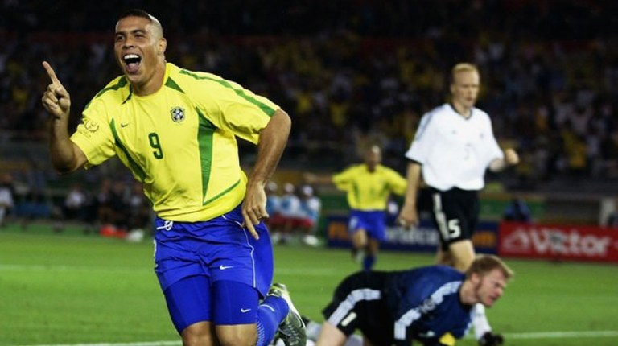
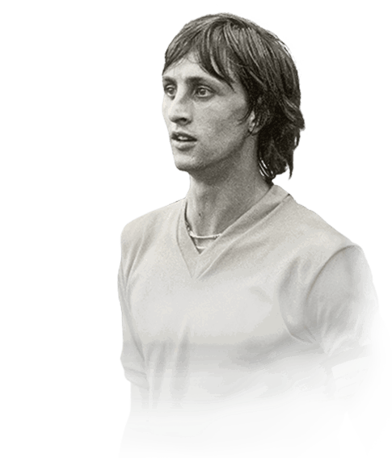

A Origem

Quase todas as culturas do mundo possuem alguma referência ao
futebol.
Chineses, japoneses, italianos, gregos antigos, persas, vikings e muitos
outros povos já jogavam algum tipo de jogo de bola em tempos muitos distantes.
Porém, foi na Inglaterra que o futebol realmente começou a tomar forma.
Tudo começou em 1863, quando duas associações de jogos de bola se
separaram, porque os partidários do "rugby" não aceitavam um jogo em que
era proibido segurar a bola com as mãos. E isso acabou dando origem à
The English Football Association, primeira associação inglesa de futebol.
A Copa do mundo
A história da Copa do Mundo de futebol começa em 1928 quando o
francês Jules Rimet assume o comando da Federação Internacional de
Futebol (FIFA) e começa a organizar a primeira competição de futebol mundial.
A estreia do evento aconteceu em 1930 no Uruguai e contou com a
participação de 13 seleções convidadas. Argentina, Bélgica, Brasil,
Bolívia, Chile, Estados Unidos, França, Iugoslávia, México, Paraguai,
Peru, Romênia, Uruguai.

O REI!

A história do maior jogador de futebol do mundo começou a ser
construída na Suécia, em 1958, quando o rei, aos 17 anos,
conquistou a primeira de suas três Copas - um feito que, até hoje,
nenhum outro jogador alcançou. Pelé ajudou a construir a
identidade nacional brasileira. Ele apresentou o que a cultura de
rua; o que um pé descalço é capaz de aprender. O Império brasileiro
a partir do seu monarca mudou o jogo que surgiu na Inglaterra.
Após 58, o Brasil se tornou referência mundial no futebol,
ganhando 3 títulos entre 58 e 70, porém após isso, a seleção ficou
24 anos de jejum, tendo grandes seleções durante o periodo,
como a seleção de 82 liderada por Zico, Sócrates e Falcão.
Mas foi apenas em 1994 que o Brasil voltou a vencer, liderada por
Romário e Bebeto. O penta campeonato veio pouco depois, após a
derrota na final de 98, o Brasil superou a Alemanha na final de
2002, com 2 gols de Ronaldo Fenômeno na final.

A revolução tática
Se você já ouviu a expressão “futebol moderno” para
explicar o jogo de equipes
como Barcelona,
Bayern e Tottenham, sabe de onde vem as influências e ideias que moldaram o esporte praticado há
anos.
Pense na Lei do Impedimento e o Arsenal de Herbert Chapman. A Hungria de Puskas.
O Brasil de Pelé, Zagallo e a invenção do 4-3-3. A Inglaterra campeã em 1966.
De lá pra cá, todas as mudanças e revoluções do futebol começam e terminam em um nome: Johan Cruyff.
Era a concepção de ideia que mudou profundamente o jogo: linhas avançadas, intensidade e marcação
por
pressão para não dar tempo e espaço ao adversário. Com a bola, troca de passes, inversão de posições
e mentalidade ofensiva. Junto com o mentor Rinus Michels, a Holanda de 1974 chocou o mundo.
No Barcelona, Cruyff ajudou a acabar com o jejum de títulos, coroado com um 5x0 no Real Madrid,
e formou as bases da filosofia blaugrana: jogar bem acima do resultado. Não deixar de atacar como
forma de respeito ao jogo e ao adversário. Coletivo, valorizando a inteligência e o passe.
